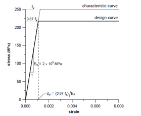
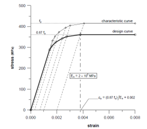
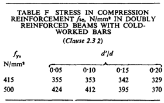

DESIGN OF CONCRETE SECTION AS PER IS 456:2000
MATERIAL SAFETY FACTORS
The material safety factors have been assumed for concrete and steel as given below
For Concrete \( \gamma_m = 1.5 \)
For Steel \( \gamma_m = 1.15 \)
STRESS-STRAIN CURVE OF CONCRETE
The parabolic Stress-strain curve is given as follow. The relationship with stress and strain is also provided below.
If Strain ε<0.002 the stress fc is given by: \( f_c = 0.446 f_{ck} \left[ 2 \frac{\varepsilon}{0.002} - \left( \frac{\varepsilon}{0.002} \right)^2 \right] \).
Otherwise \( 0.002 \leq \varepsilon \leq 0.0035\) stress is given by, \( f_c = 0.446 f_{ck} \).
STRESS-STRAIN CURVE OF STEEL
Stress-strain curve is linear in mild steel (Fe250). The relation is shown as given below.
| Stress | Inelastic strain |
|---|---|
| 0.80fy | Nil |
| 0.85fy | 0.0001 |
| 0.90fy | 0.0003 |
| 0.95fy | 0.0007 |
| 0.975fy | 0.0010 |
| 1.0fy | 0.0020 |
Similarly for Tor Steel, Stress-strain curve is given as follows. The numerical value of this relation has been provided in table below. The intermediate values can be calculation using linear interpolation.
| Stress | Inelastic strain |
|---|---|
| 0.80fy | 0.00144 |
| 0.85fy | 0.00163 |
| 0.90fy | 0.00192 |
| 0.95fy | 0.00241 |
| 0.975fy | 0.00276 |
| 1.0fy | 0.00380 |
| Stress | Inelastic strain |
|---|---|
| 0.80fy | 0.00174 |
| 0.85fy | 0.00195 |
| 0.90fy | 0.00226 |
| 0.95fy | 0.00277 |
| 0.975fy | 0.00312 |
| 1.0fy | 0.00417 |
STRESS AND STRAIN DIAGRAM OF THE SECTION
The relation is given as follows.


Total compressive force, \( F_c = 0.362{f_{ck}}b{x_u} \).
And centroid of the compression block, \( x = 0.416{x_u} \).And \( x_{u,lim} = kd \)
Where, \( k = \frac{0.0035}{0.0055+0.87\frac{f_y}{E_s}} \)
Moment of resistant for singly reinforced section; \( M_u = 0.36f_{ck}bk(1-0.42k)d^2 \).
The singly and doubly reinforced section shall be differentiated by calculated by moment of resistance as given above. If Mu>M,Singly reinforced otherwise Doubly reinforced section.
The moment of resistance can be calculated by;
For singly reinforced section: \( M_u = 0.87{f_y}\frac{p_t}{100}x[1-\frac{1.005{f_y}}{f_{ck}}\frac{p_t}{100}]bd^2 \).
Area of reinforcement for singly reinforced section can be calculated by; \( A_st = \frac{f_{ck}}{2f_y}(1-\sqrt(1-4.598\frac{M}{f_{ck}bd^2})) \)
The design of doubly reinforced section can be calculated by the following relations
\( M_{u2} = M_u-M_{u,lim} \)\( M_{u,lim} = 0.362f_{ck}x_{u,lim}(1-0.416x_{u,lim})d \)
\(M_{u2}=Ast_{2}(0.87f_y)(d-d') \)
Also, \( M_{u2} = A_{sc} (f_{sc} - f_{cc}) (d - d') \).
fsc can be calculated using strain diagram as given below.

Using the stress-strain diagram of steel, fsc shall be calculated for strain, εsc
\(\varepsilon_{sc}=0.0035(1-\frac{d'}{x_{u,lim}}) \)Or using the following table, fsc can be calculated.
This table can be formulated as
i) For fy = 250 N/mm2
\(f_{sc}=217 N/mm^2 \)ii) For fy = 415 N/mm2
\(f_{sc}=9333(\frac{d'}{d})^3-4600(\frac{d'}{d})^2+486.6(\frac{d'}{d})+341.0 N/mm^2 \)ii) For fy = 500 N/mm2
\(f_{sc}=-1300(\frac{d'}{d})^2-33(\frac{d'}{d})+428.7 N/mm^2 \)\(f_{cc}=0.446f_{ck} \)
SHEAR REINFORCEMENT
Design shear strength of concrete is given by.
\( \tau=\frac{0.85\sqrt(0.8f_{ck})(\sqrt(1+5\beta)-1)}{6\beta} \)The value given in Table 19 of IS 456:2000 has been derived from this equation. the Correction factor for depth shall be incorporated in the above formula. The correction factor is given bu Clause 40.2.1.
| Overall depth | ≥ 300 | 275 | 250 | 225 | 200 | 175 | ≤ 150 |
|---|---|---|---|---|---|---|---|
| K | 1.00 | 1.05 | 1.10 | 1.15 | 1.20 | 1.25 | 1.30 |
These values can be represented by following relations
If \(D \leq 150, K = 1.30 \)
If \(D > 300, K = -0.002D+1.6 \)